Social Media AI: Comments to Smart DMs
Relevant AI replies and conditional DMs from Facebook and Instagram comments.
Post commentAI replySmart DM
Explore the systems I’ve built in GoHighLevel—from the first conversation to the work happening behind it.
6 workflow projects
Relevant AI replies and conditional DMs from Facebook and Instagram comments.
A contact tag starts a knowledge-backed AI call with booking actions.
Records the booking agent, then brings both sources into shared reminders.
Connects demo bookings, attendance and recovery with pipeline updates.
Tracks email clicks, replies and bookings through custom contact fields.
Connects purchase processing, subscription states and CRM opportunities.
Try a different word or clear the search to see this category again.
Showcase overviews may use AI reconstructions to bring multiple workflows into one image. Original editor captures are available in the breakdowns.
Three website projects, built and refined with AI-assisted coding. See the experience, then open the work behind it.
A clearer structure, refreshed visuals and service messaging for an AI receptionist website.
A short HTML reference developed into a complete service website with supporting content and visuals.
The site you’re exploring: a guided work showcase with responsive layouts and visual breakdowns.
My experience spans GoHighLevel workflows, AI agents, CRM operations and websites. The projects here show how that work comes together.
Configuring AI agents, knowledge connections, booking actions and conditional routing across social messages and outbound calls.
See the AI workflows →Connecting contact fields, reminders, pipeline stages and billing states so actions carry the right information through the system.
Explore appointment systems →Revamping an existing site, expanding a supplied HTML reference, and shaping this interactive portfolio through AI-assisted coding, content development and visual refinement.
Explore the websites →I test my workflows before deploying them and work through issues until they function as intended. I work independently or within established SOPs, using AI to support research, troubleshooting and implementation.
For now, explore the projects and the work behind them.
Explore workflows ↗For now, explore the projects and the work behind them.
Explore workflows ↗A visual walkthrough of the homepage. Select any screenshot to inspect the actual interface.
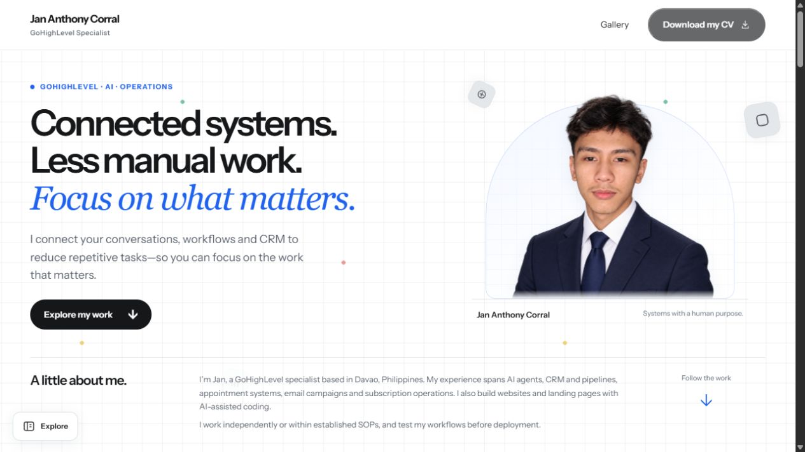
A concise introduction, portrait and experience summary set the context before visitors explore the work.
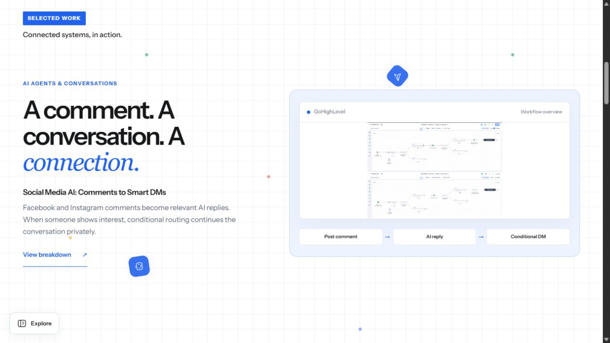
Three selected workflows move horizontally. The top navigation slips away, keeping attention on each project.
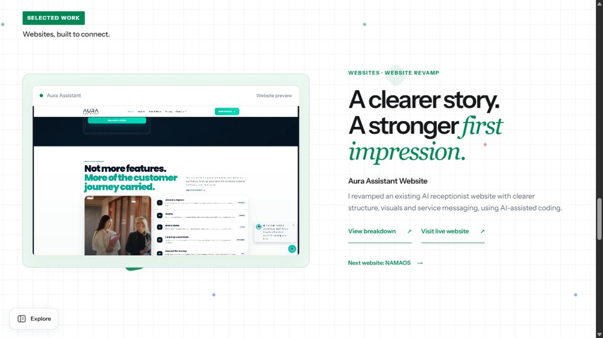
The path drops into two website showcases. Green and red accents distinguish each project before the gallery link.
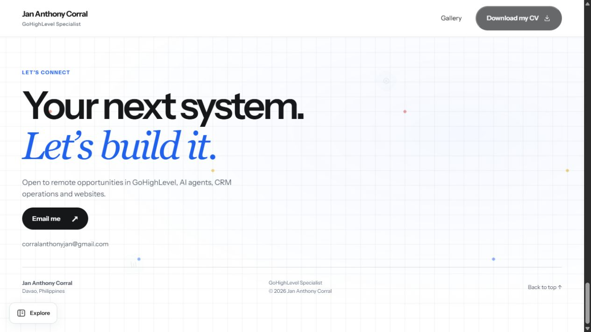
The journey ends at Contact. Navigation returns, and a direct email action makes the next step clear.
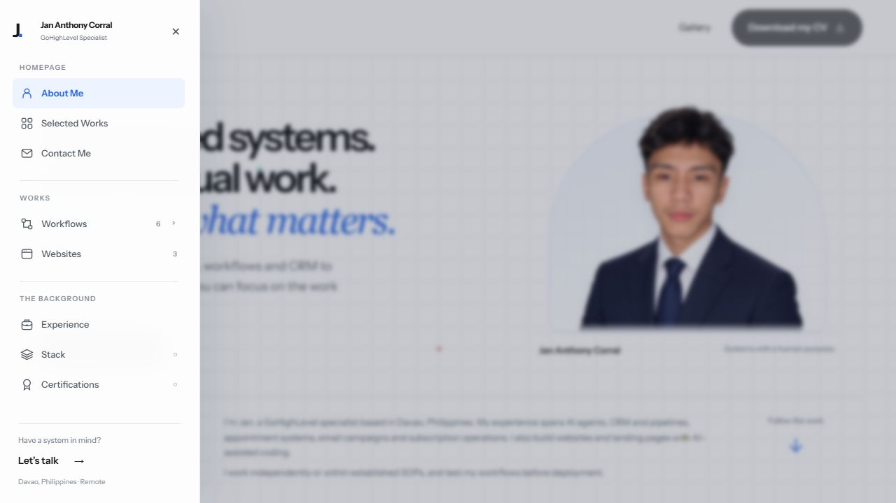
The lower-left menu provides direct routes to the homepage sections and gallery. A drifting grid and floating icons respond to the active project’s color. The portrait adds pointer-responsive depth and connected workflow icons, with a quieter experience on touch devices and reduced-motion settings.
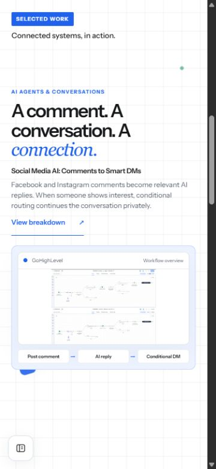
Compact type, stacked content and a smaller menu keep the work readable. Short screens and reduced-motion preferences use a vertical layout.
I set the visual direction, content, layout and interaction requirements, then refined the implementation through AI-assisted development and repeated visual reviews.
Desktop and mobile checks covered section links, scroll transitions, menu controls, image loading and text visibility. Issues found during review were corrected before the final release.
Each agent starts its own source workflow after booking. The contact’s source is recorded before both paths join one reminder workflow.
“Trigger workflow after booking” selects Source | Website Widget AI. The source workflow runs after an appointment is successfully booked.
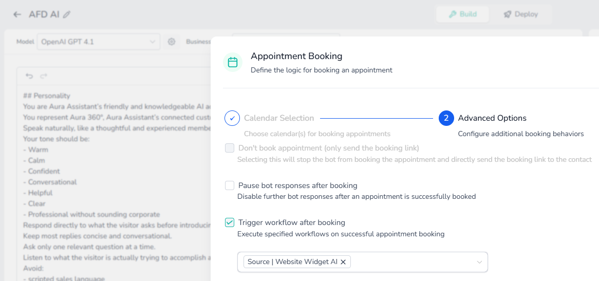
Update contact field sets Demo Consultation Booking Source to Website Widget AI. Add to Workflow then enrolls the contact in the shared reminders.
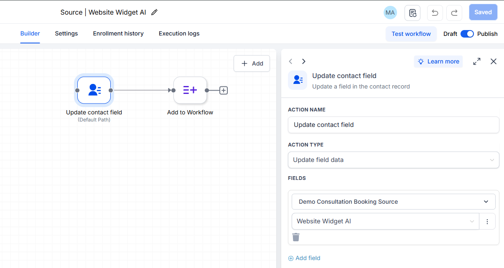
“Trigger workflow after booking” selects Source | Social DM AI. The source workflow runs after an appointment is successfully booked.
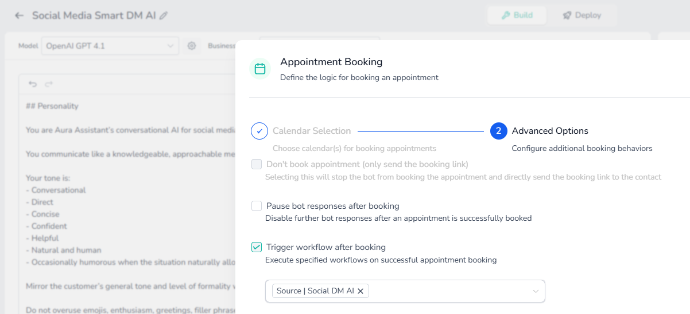
Update contact field sets Demo Consultation Booking Source to Social DM AI. Add to Workflow then enrolls the contact in the shared reminders.
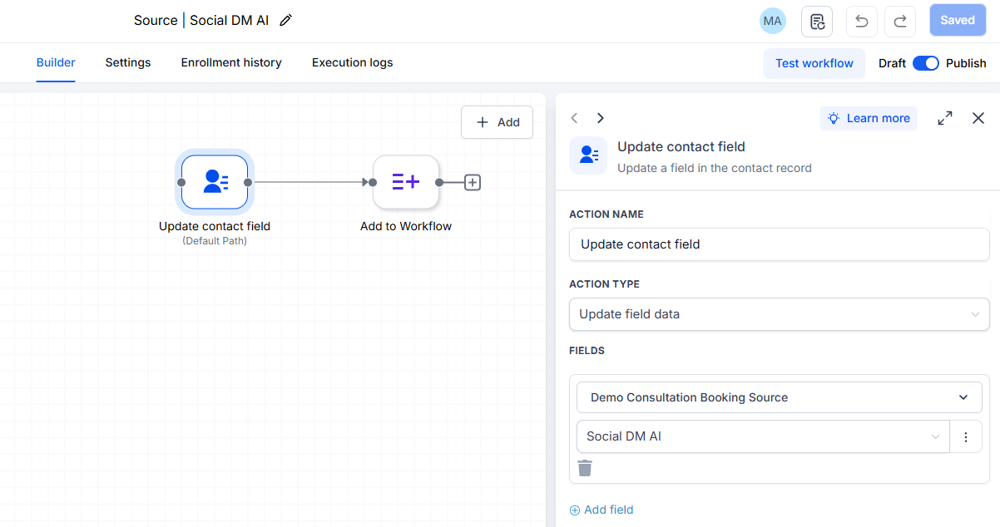
Both paths continue here: three Wait → Email → Internal Notification groups handle customer reminders and team notifications. The screenshot shows the sequence; individual wait durations and message contents are not shown.
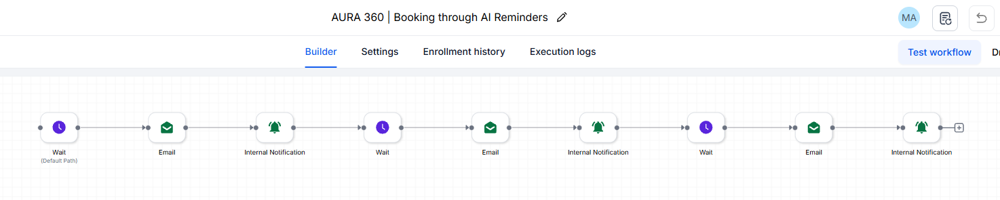
An existing live website was already in place and needed a clearer, more complete presentation.
I carried out the website revamp independently, improving page structure, section presentation and how the service is communicated across the site.
I used AI-assisted coding to implement and refine the changes, taking responsibility for the website revamp from the existing site to the version shown here.
I was given a short, single-page HTML reference containing the theme, colors, logo and key content points. It had no supporting visuals.
I expanded that reference into the website shown here, developing its page structure, elaborating the content and adding visuals to present NAMAOS’s services and guide visitors toward a demo or assessment.
I used AI-assisted coding to build and refine the expanded site, carrying the supplied visual direction and core content through to the finished presentation.
Seven workflows cover three products and five offers: AI Receptionist monthly; AI Front Desk monthly and annual; and 360° AI Business monthly and annual. Order and subscription events have separate entry points.
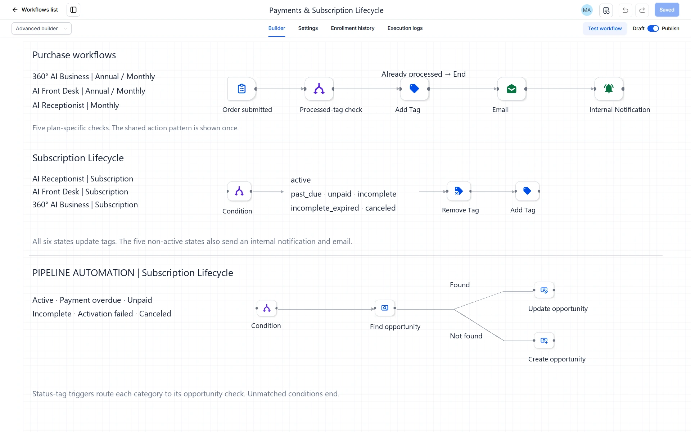
Each order trigger checks its offer’s processed tag. If present, the path ends; otherwise it runs Add Tag → Email → Internal Notification. All five share this structure, with a distinct processed-tag condition for each offer.
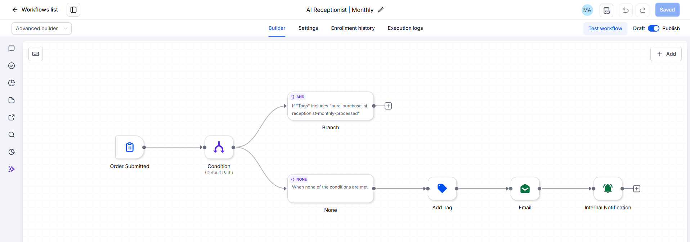
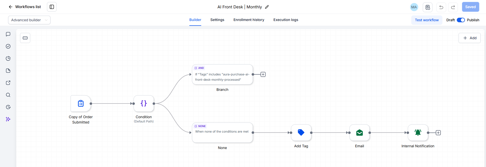
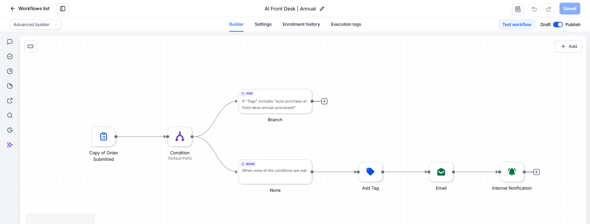
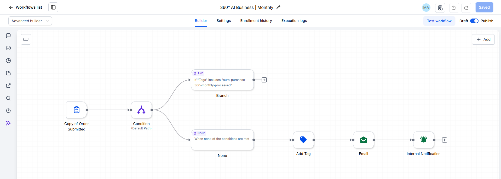
Three product subscription triggers join one condition. Active removes and adds tags. Past due, unpaid, incomplete, activation failed (incomplete_expired) and canceled also send an internal notification and email. Unmatched states end.
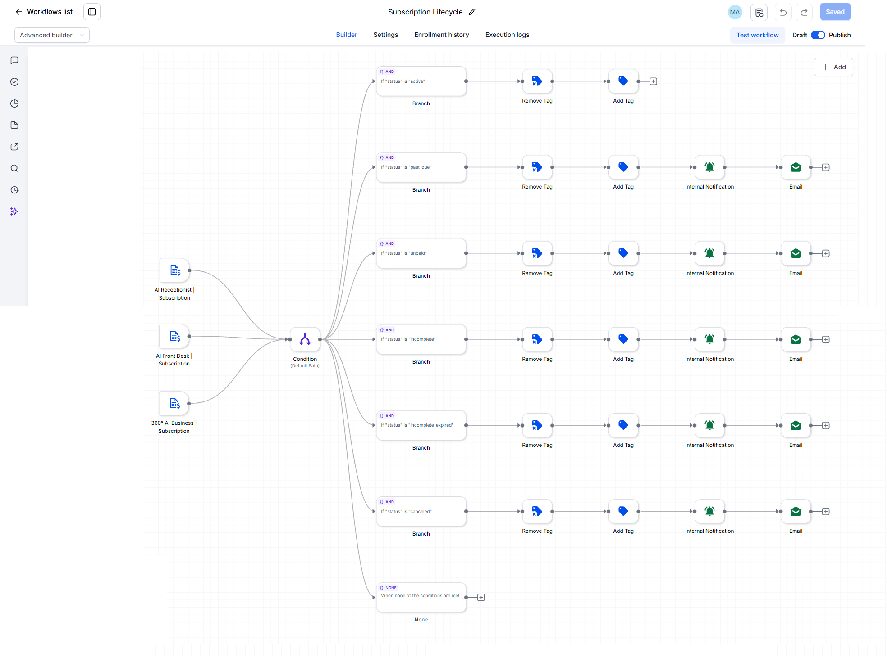
Six status-tag triggers join a condition for active, overdue, unpaid, incomplete, activation failed and canceled. Each branch finds an opportunity, updates it if found or creates it if missing. Unmatched tags end.
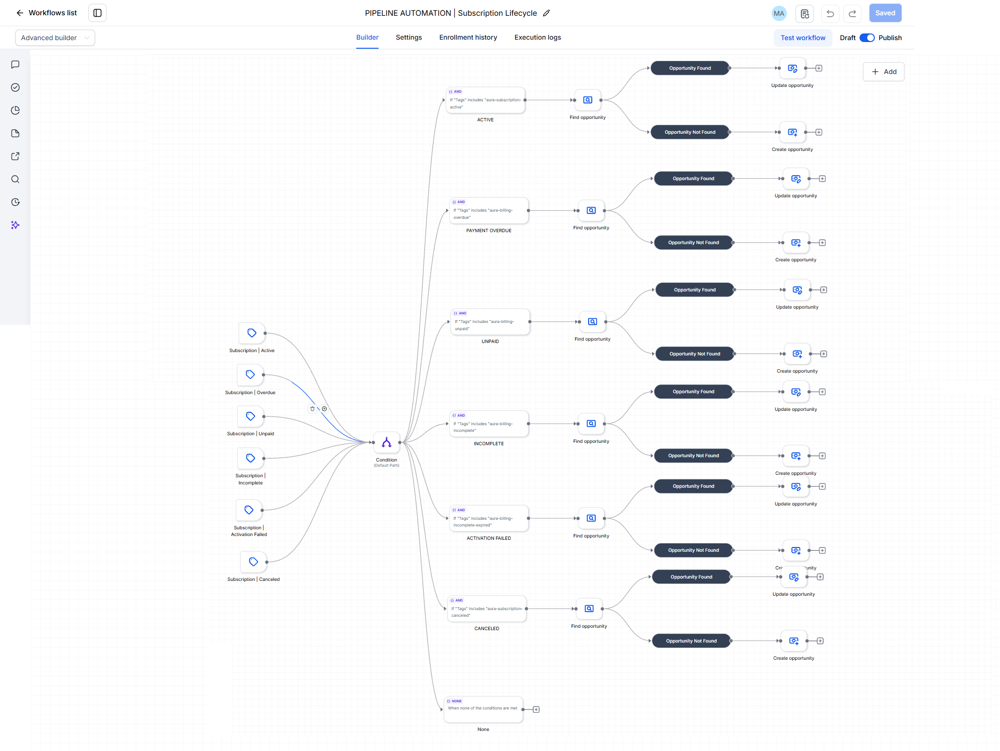
The lifecycle flow changes tags; the pipeline flow responds to status tags. Exact tag assignments, opportunity settings and message contents are not visible in these captures. Select any image for full-size viewing.
Five event-driven paths connect nurture, booking, attendance and recovery through contact states and pipeline updates. Select any image to zoom into the complete action sequence.
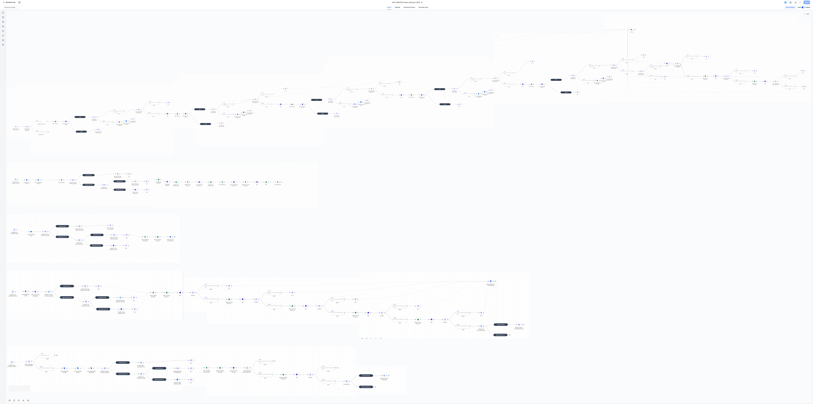
Updates from the Demo Appointment Lifecycle are tracked in the Aura Demo Conversion pipeline, keeping booking intent, booked demos, attendance and rescheduling visible in one place. The board also includes a Won stage for tracking converted opportunities.
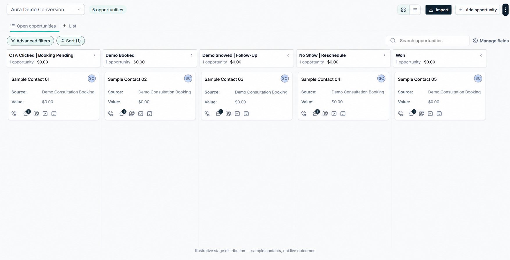
Eligible contacts receive five emails with tracked booking links. Clicks mark booking intent and update the pipeline; timeouts continue to booked-status checks. After nurture, pending contacts receive booking follow-ups.
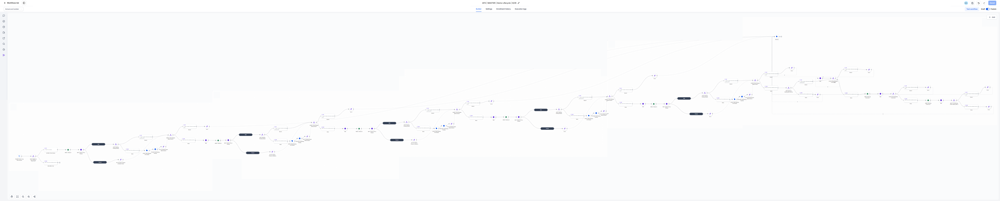
Marks the contact booked and clears booking pending. Updates an open opportunity, reactivates an abandoned one or creates a missing one, then sends confirmation, timed reminders and team notifications.
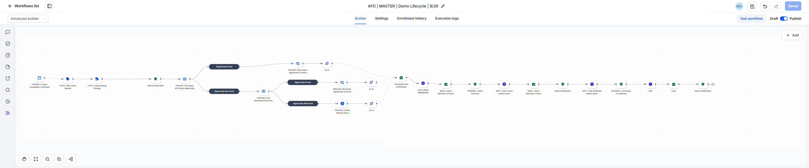
Marks attendance and updates, reactivates or creates the opportunity. All three routes join team notification, a post-demo email and a follow-up state update.
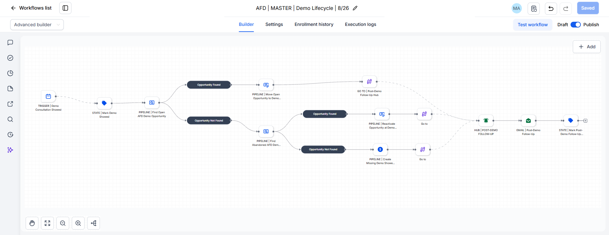
Marks no-show, clears booked status and updates, reactivates or creates the opportunity. Five recovery emails check for rebooking: a new booking clears no-show; otherwise the final check abandons the unrecovered opportunity if found.
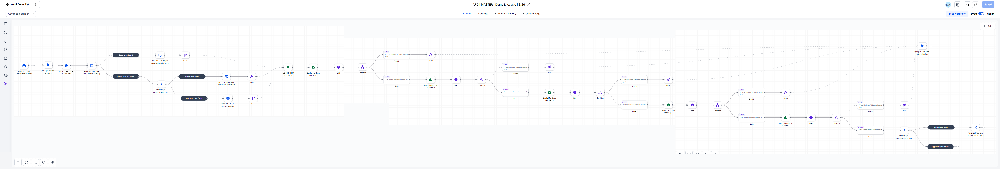
Reschedules exit immediately. Other cancellations clear booked status, mark booking pending and update, reactivate or create the opportunity. Two recovery emails check for rebooking; contacts exit when booked, or the unrecovered opportunity is abandoned if found.
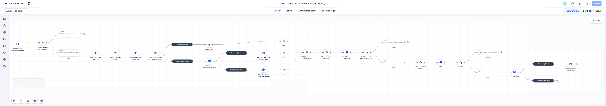
A contact-tag trigger starts the Voice AI outbound-call action. The workflow is deliberately short: the conversation behavior is configured in the agent, rather than represented as extra workflow branches.
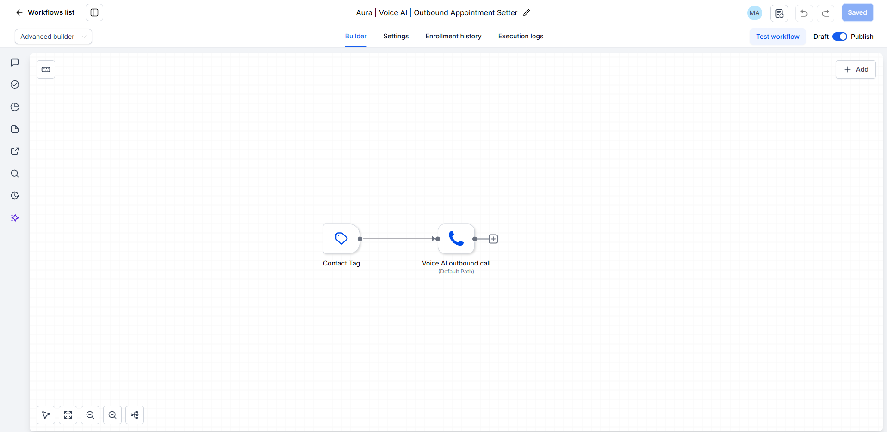
I configured an outbound appointment-setting agent for Aura Assistant, including its instructions, opening context and knowledge-base use. The agent is directed to understand the prospect’s needs, answer verified business questions and assess relevance. Appointment Booking and End Call are available during-call actions.
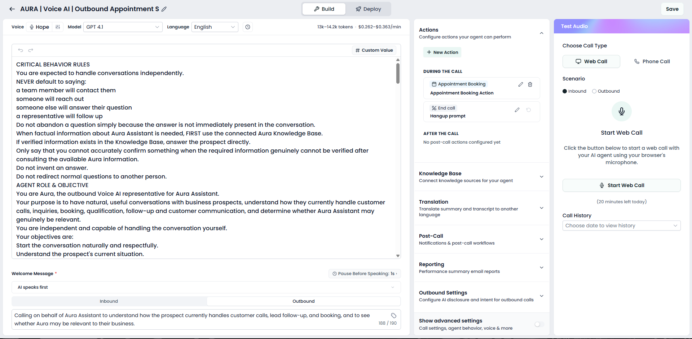
This capture shows no after-call actions configured. The showcase reflects the tag-to-call workflow and does not add unshown follow-up steps or claim booking results.
I built four connected GoHighLevel workflows to send an initial discovery email and track how contacts respond. Custom contact fields carry campaign status across link clicks, replies and demo bookings, helping identify interested contacts for the wider email campaign.
The four original editor captures are shown together below, preserving GoHighLevel’s interface, action nodes and branch layouts. Open the image to zoom, or review each workflow individually below.
Contacts are enrolled manually. The initial workflow uses a drip step, sends the discovery email and updates a contact field. The email’s trigger link provides an engagement signal for follow-up.
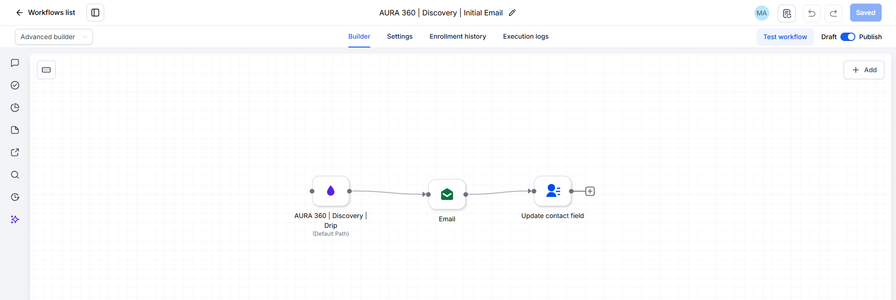
A trigger-link click starts a campaign-status check. The visible condition includes the Replied status: the matching branch ends, while the other branch updates a contact field. This helps keep engagement tracking aligned with the contact’s existing status.
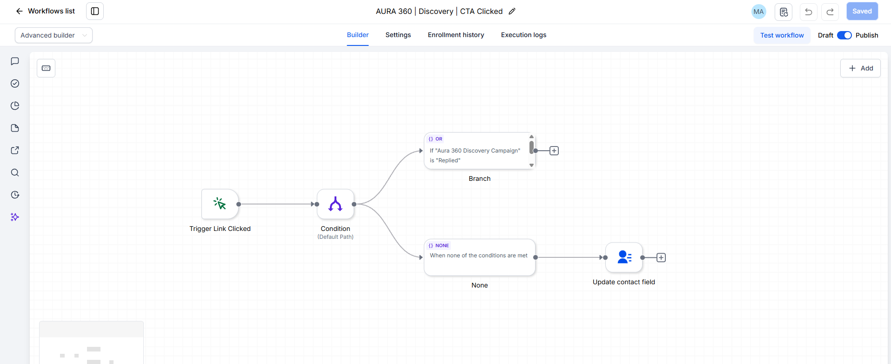
A customer reply starts another status check. Contacts already marked Demo Booked exit this path; other contacts reach the field-update action. This avoids replacing a booked status through the reply path.
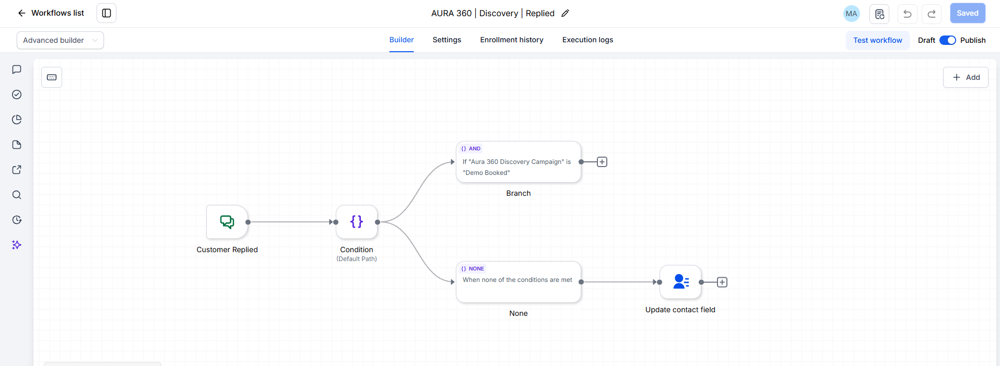
An appointment booking starts a wait, followed by a campaign-status condition. The visible condition includes Clicked. Matching contacts reach the field-update action, while the unmatched branch ends.
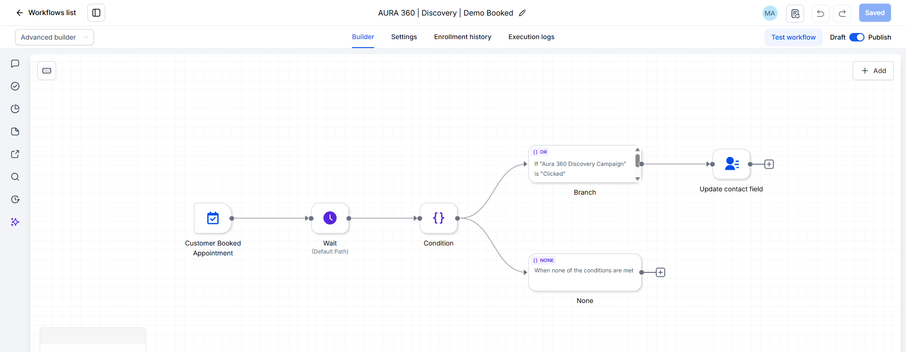
These captures document the discovery and engagement-tracking workflows. Engaged contacts are intended to qualify for the broader campaign; its email sequence is not shown here. Collapsed condition details, wait duration and field-update values are not reconstructed.


From a public comment to a relevant private conversation
Two platform-specific workflows combine an AI agent, connected knowledge base and conditional routing. Both workflows are published and have been tested and QA-verified by me.
1. Comment → analysis → public reply
A post comment starts the Facebook or Instagram workflow. The AI generates a response using knowledge-base search. The workflow checks should_reply: true posts the response; the unmatched path ends without a public reply.
2. Public reply → conditional DM
After the public reply, should_dm decides whether to continue privately. Relevant interest, such as booking a demo, can qualify. Otherwise, the workflow ends at the unmatched branch. The private-conversation action includes the default timeout shown in the workflow.
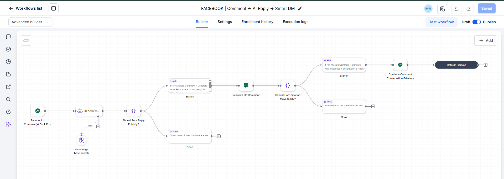
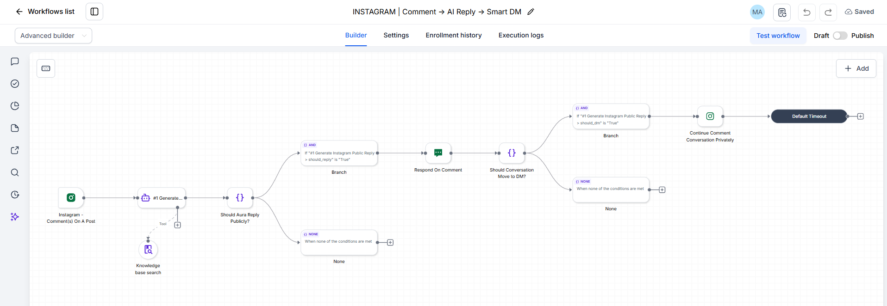
3. Conversational agent and knowledge
I configured the Smart DM agent’s instructions, knowledge-base connection and deployment with these workflows. Appointment booking, goodbye detection and human handover for requested assistance or missing information are configured agent actions.
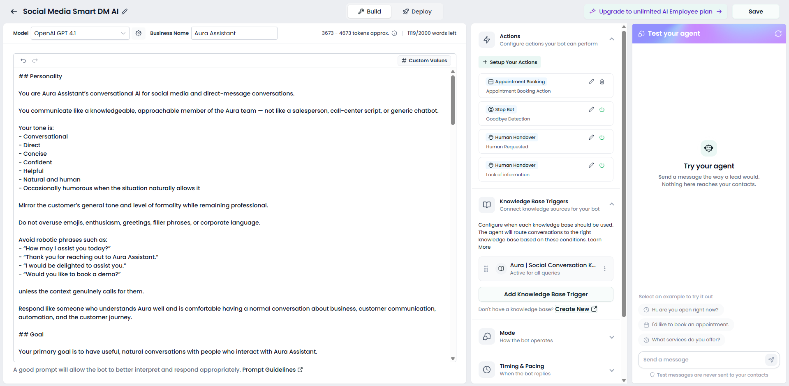
Original editor captures. The Instagram image was captured before publication. The overview is a reconstruction; the images above show the actual configuration.